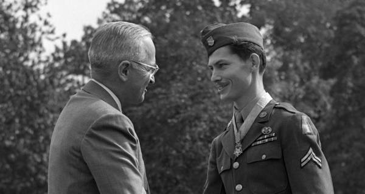

Desmond Thomas Doss
The warrior without a weapon

Corporal Doss receiving the Medal of Honor from President Truman
Here's a time line of Doss's life:
- 1919 - Born in Lynchburg, Virginia, U.S
- 1941 - Doss began working as a ship joiner at the Newport News naval shipyard
- 1942 - Chose military service at Camp Lee
- 1942 - Doss married Dorothy Pauline Schutte
- 1944 - Was awarded two Bronze Star Medals with a "V" device, for exceptional valor in aiding wounded soldiers under fire
- 1945 - Wounded Doss was evacuated aboard the USS Mercy
- 1946 - Birth of Desmond "Tommy" Doss Jr.
- 1946 - Doss was diagnosed with tuberculosis
- 1976 - An overdose of antibiotics rendered him completely deaf
- 2006 - Dies at the age of 87
"He demonstrated that unconditional love, compassion, acceptance, and forgiveness, are possible even in the most adverse circumstances."
- Desmond Doss Jr.